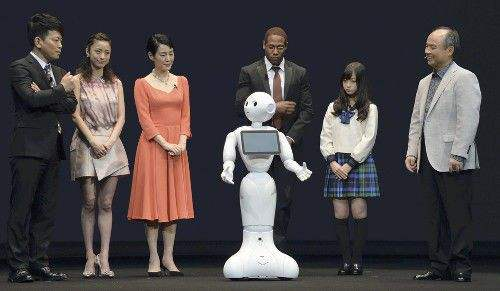
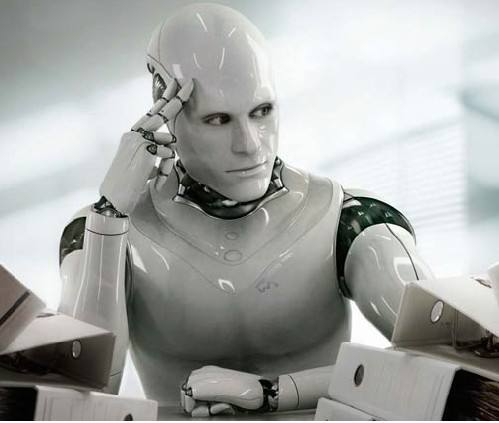
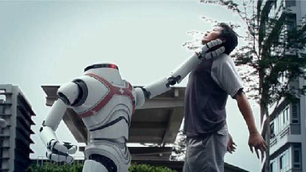

Main articles: Philosophy of artificial intelligence and Ethics of artificial intelligence
1.Is artificial general intelligence possible? Can a machine solve any problem that a human being can solve using intelligence? Or are there hard limits to what a machine can accomplish?
2. Are intelligent machines dangerous? How can we ensure that machines behave ethically and that they are used ethically?
3. Can a machine have a mind, consciousness and mental states in exactly the same sense that human beings do? Can a machine be sentient, and thus deserve certain rights? Can a machine intentionally cause harm?
Main articles: philosophy of AI, Turing test, Physical symbol systems hypothesis, Dreyfus' critique of AI, The Emperor's New Mind, and AI effect
Can a machine be intelligent? Can it "think"?
Turing's "polite convention"
We need not decide if a machine can "think"; we need only decide if a machine can act as intelligently as a human being. This approach to the philosophical problems associated with artificial intelligence forms the basis of the Turing test.
The Dartmouth proposal
"Every aspect of learning or any other feature of intelligence can be so precisely described that a machine can be made to simulate it." This conjecture was printed in the proposal for the Dartmouth Conference of 1956, and represents the position of most working AI researchers.
Newell and Simon's physical symbol system hypothesis
"A physical symbol system has the necessary and sufficient means of general intelligent action." Newell and Simon argue that intelligence consists of formal operations on symbols. Hubert Dreyfus argued that, on the contrary, human expertise depends on unconscious instinct rather than conscious symbol manipulation and on having a "feel" for the situation rather than explicit symbolic knowledge. (See Dreyfus' critique of AI.)
Gödelian arguments
Gödel himself, John Lucas (in 1961) and Roger Penrose (in a more detailed argument from 1989 onwards) made highly technical arguments that human mathematicians can consistently see the truth of their own "Gödel statements" and therefore have computational abilities beyond that of mechanical Turing machines. However, the modern consensus in the scientific and mathematical community is that these "Gödelian arguments" fail.
The artificial brain argument
The brain can be simulated by machines and because brains are intelligent, simulated brains must also be intelligent; thus machines can be intelligent. Hans Moravec, Ray Kurzweil and others have argued that it is technologically feasible to copy the brain directly into hardware and software, and that such a simulation will be essentially identical to the original.
The AI effect
Machines are already intelligent, but observers have failed to recognize it. When Deep Blue beat Garry Kasparov in chess, the machine was acting intelligently. However, onlookers commonly discount the behavior of an artificial intelligence program by arguing that it is not "real" intelligence after all; thus "real" intelligence is whatever intelligent behavior people can do that machines still cannot. This is known as the AI Effect: "AI is whatever hasn't been done yet."
Widespread use of artificial intelligence could have unintended consequences that are dangerous or undesirable. Scientists from the Future of Life Institute, among others, described some short-term research goals to be how AI influences the economy, the laws and ethics that are involved with AI and how to minimize AI security risks. In the long-term, the scientists have proposed to continue optimizing function while minimizing possible security risks that come along with new technologies.
Machines with intelligence have the potential to use their intelligence to make ethical decisions. Research in this area includes "machine ethics", "artificial moral agents", and the study of "malevolent vs. friendly AI".
Existential risk
Main article: Existential risk from artificial general intelligence
The development of full artificial intelligence could spell the end of the human race. Once humans develop artificial intelligence, it will take off on its own and redesign itself at an ever-increasing rate. Humans, who are limited by slow biological evolution, couldn't compete and would be superseded.
— Stephen Hawking
A common concern about the development of artificial intelligence is the potential threat it could pose to mankind. This concern has recently gained attention after mentions by celebrities including Stephen Hawking, Bill Gates, and Elon Musk. A group of prominent tech titans including Peter Thiel, Amazon Web Services and Musk have committed $1billion to OpenAI a nonprofit company aimed at championing responsible AI development. The opinion of experts within the field of artificial intelligence is mixed, with sizable fractions both concerned and unconcerned by risk from eventual superhumanly-capable AI.
In his book Superintelligence, Nick Bostrom provides an argument that artificial intelligence will pose a threat to mankind. He argues that sufficiently intelligent AI, if it chooses actions based on achieving some goal, will exhibit convergent behavior such as acquiring resources or protecting itself from being shut down. If this AI's goals do not reflect humanity's - one example is an AI told to compute as many digits of pi as possible - it might harm humanity in order to acquire more resources or prevent itself from being shut down, ultimately to better achieve its goal.
For this danger to be realized, the hypothetical AI would have to overpower or out-think all of humanity, which a minority of experts argue is a possibility far enough in the future to not be worth researching. Other counterarguments revolve around humans being either intrinsically or convergently valuable from the perspective of an artificial intelligence.
Concern over risk from artificial intelligence has led to some high-profile donations and investments. In January 2015, Elon Musk donated ten million dollars to the Future of Life Institute to fund research on understanding AI decision making. The goal of the institute is to "grow wisdom with which we manage" the growing power of technology. Musk also funds companies developing artificial intelligence such as Google DeepMind and Vicarious to "just keep an eye on what's going on with artificial intelligence. I think there is potentially a dangerous outcome there."
Development of militarized artificial intelligence is a related concern. Currently, 50+ countries are researching battlefield robots, including the United States, China, Russia, and the United Kingdom. Many people concerned about risk from superintelligent AI also want to limit the use of artificial soldiers.

Devaluation of humanity
Main article: Computer Power and Human Reason
Joseph Weizenbaum wrote that AI applications cannot, by definition, successfully simulate genuine human empathy and that the use of AI technology in fields such as customer service or psychotherapy was deeply misguided. Weizenbaum was also bothered that AI researchers (and some philosophers) were willing to view the human mind as nothing more than a computer program (a position now known as computationalism). To Weizenbaum these points suggest that AI research devalues human life.
Decrease in demand for human labor
Martin Ford, author of The Lights in the Tunnel: Automation, Accelerating Technology and the Economy of the Future, and others argue that specialized artificial intelligence applications, robotics and other forms of automation will ultimately result in significant unemployment as machines begin to match and exceed the capability of workers to perform most routine and repetitive jobs. Ford predicts that many knowledge-based occupations—and in particular entry level jobs—will be increasingly susceptible to automation via expert systems, machine learning and other AI-enhanced applications. AI-based applications may also be used to amplify the capabilities of low-wage offshore workers, making it more feasible to outsource knowledge work.
Artificial moral agents
This raises the issue of how ethically the machine should behave towards both humans and other AI agents. This issue was addressed by Wendell Wallach in his book titled Moral Machines in which he introduced the concept of artificial moral agents (AMA). For Wallach, AMAs have become a part of the research landscape of artificial intelligence as guided by its two central questions which he identifies as "Does Humanity Want Computers Making Moral Decisions" and "Can (Ro)bots Really Be Moral". For Wallach the question is not centered on the issue of whether machines can demonstrate the equivalent of moral behavior in contrast to the constraints which society may place on the development of AMAs.
Machine ethics
Main article: Machine ethics
The field of machine ethics is concerned with giving machines ethical principles, or a procedure for discovering a way to resolve the ethical dilemmas they might encounter, enabling them to function in an ethically responsible manner through their own ethical decision making. The field was delineated in the AAAI Fall 2005 Symposium on Machine Ethics: "Past research concerning the relationship between technology and ethics has largely focused on responsible and irresponsible use of technology by human beings, with a few people being interested in how human beings ought to treat machines. In all cases, only human beings have engaged in ethical reasoning. The time has come for adding an ethical dimension to at least some machines. Recognition of the ethical ramifications of behavior involving machines, as well as recent and potential developments in machine autonomy, necessitate this. In contrast to computer hacking, software property issues, privacy issues and other topics normally ascribed to computer ethics, machine ethics is concerned with the behavior of machines towards human users and other machines. Research in machine ethics is key to alleviating concerns with autonomous systems—it could be argued that the notion of autonomous machines without such a dimension is at the root of all fear concerning machine intelligence. Further, investigation of machine ethics could enable the discovery of problems with current ethical theories, advancing our thinking about Ethics." Machine ethics is sometimes referred to as machine morality, computational ethics or computational morality. A variety of perspectives of this nascent field can be found in the collected edition "Machine Ethics" that stems from the AAAI Fall 2005 Symposium on Machine Ethics.
Malevolent and friendly AI
Main article: Friendly AI
Political scientist Charles T. Rubin believes that AI can be neither designed nor guaranteed to be benevolent. He argues that "any sufficiently advanced benevolence may be indistinguishable from malevolence." Humans should not assume machines or robots would treat us favorably, because there is no a priori reason to believe that they would be sympathetic to our system of morality, which has evolved along with our particular biology (which AIs would not share). Hyper-intelligent software may not necessarily decide to support the continued existence of mankind, and would be extremely difficult to stop. This topic has also recently begun to be discussed in academic publications as a real source of risks to civilization, humans, and planet Earth.
Physicist Stephen Hawking, Microsoft founder Bill Gates, and SpaceX founder Elon Musk have expressed concerns about the possibility that AI could evolve to the point that humans could not control it, with Hawking theorizing that this could "spell the end of the human race".
One proposal to deal with this is to ensure that the first generally intelligent AI is 'Friendly AI', and will then be able to control subsequently developed AIs. Some question whether this kind of check could really remain in place.
Leading AI researcher Rodney Brooks writes, "I think it is a mistake to be worrying about us developing malevolent AI anytime in the next few hundred years. I think the worry stems from a fundamental error in not distinguishing the difference between the very real recent advances in a particular aspect of AI, and the enormity and complexity of building sentient volitional intelligence."

Main article: Artificial consciousness
If an AI system replicates all key aspects of human intelligence, will that system also be sentient – will it have a mind which has conscious experiences? This question is closely related to the philosophical problem as to the nature of human consciousness, generally referred to as the hard problem of consciousness.
Consciousness
Main articles: Hard problem of consciousness and Theory of mind
This section needs expansion. You can help by adding to it.
Computationalism and functionalism
Main articles: Computationalism and Functionalism (philosophy of mind)
Computationalism is the position in the philosophy of mind that the human mind or the human brain (or both) is an information processing system and that thinking is a form of computing. Computationalism argues that the relationship between mind and body is similar or identical to the relationship between software and hardware and thus may be a solution to the mind-body problem. This philosophical position was inspired by the work of AI researchers and cognitive scientists in the 1960s and was originally proposed by philosophers Jerry Fodor and Hilary Putnam.
Strong AI hypothesis
Main article: Chinese room
The philosophical position that John Searle has named "strong AI" states: "The appropriately programmed computer with the right inputs and outputs would thereby have a mind in exactly the same sense human beings have minds." Searle counters this assertion with his Chinese room argument, which asks us to look inside the computer and try to find where the "mind" might be.
Robot rights
Main article: Robot rights
Mary Shelley's Frankenstein considers a key issue in the ethics of artificial intelligence: if a machine can be created that has intelligence, could it also feel? If it can feel, does it have the same rights as a human? The idea also appears in modern science fiction, such as the film A.I.: Artificial Intelligence, in which humanoid machines have the ability to feel emotions. This issue, now known as "robot rights", is currently being considered by, for example, California's Institute for the Future, although many critics believe that the discussion is premature. Some critics of transhumanism argue that any hypothetical robot rights would lie on a spectrum with animal rights and human rights. The subject is profoundly discussed in the 2010 documentary film Plug & Pray.
Main article: Superintelligence
Are there limits to how intelligent machines – or human-machine hybrids – can be? A superintelligence, hyperintelligence, or superhuman intelligence is a hypothetical agent that would possess intelligence far surpassing that of the brightest and most gifted human mind. ‘’Superintelligence’’ may also refer to the form or degree of intelligence possessed by such an agent.
Technological singularity
Main articles: Technological singularity and Moore's law
If research into Strong AI produced sufficiently intelligent software, it might be able to reprogram and improve itself. The improved software would be even better at improving itself, leading to recursive self-improvement. The new intelligence could thus increase exponentially and dramatically surpass humans. Science fiction writer Vernor Vinge named this scenario "singularity". Technological singularity is when accelerating progress in technologies will cause a runaway effect wherein artificial intelligence will exceed human intellectual capacity and control, thus radically changing or even ending civilization. Because the capabilities of such an intelligence may be impossible to comprehend, the technological singularity is an occurrence beyond which events are unpredictable or even unfathomable.
Ray Kurzweil has used Moore's law (which describes the relentless exponential improvement in digital technology) to calculate that desktop computers will have the same processing power as human brains by the year 2029, and predicts that the singularity will occur in 2045.

Transhumanism
Main article: Transhumanism
You awake one morning to find your brain has another lobe functioning. Invisible, this auxiliary lobe answers your questions with information beyond the realm of your own memory, suggests plausible courses of action, and asks questions that help bring out relevant facts. You quickly come to rely on the new lobe so much that you stop wondering how it works. You just use it. This is the dream of artificial intelligence.— Byte, April 1985
Robot designer Hans Moravec, cyberneticist Kevin Warwick and inventor Ray Kurzweil have predicted that humans and machines will merge in the future into cyborgs that are more capable and powerful than either. This idea, called transhumanism, which has roots in Aldous Huxley and Robert Ettinger, has been illustrated in fiction as well, for example in the manga Ghost in the Shell and the science-fiction series Dune.
In the 1980s artist Hajime Sorayama's Sexy Robots series were painted and published in Japan depicting the actual organic human form with lifelike muscular metallic skins and later "the Gynoids" book followed that was used by or influenced movie makers including George Lucas and other creatives. Sorayama never considered these organic robots to be real part of nature but always unnatural product of the human mind, a fantasy existing in the mind even when realized in actual form.
Edward Fredkin argues that "artificial intelligence is the next stage in evolution", an idea first proposed by Samuel Butler's "Darwin among the Machines" (1863), and expanded upon by George Dyson in his book of the same name in 1998.